每一个新渠道的出现，都会有新的渠道红利出现，并随之诞生一批新的品牌。淘宝的兴起，诞生了一批淘品牌；亚马逊的兴起，诞生了一批亚马逊品牌；抖音的兴起，诞生了一批抖品牌。今天我们要说的老管家，也是淘品牌起家，并随着时代的发展进入到了京东、拼多多、抖音等渠道。和其他转瞬即逝的渠道品牌不同，老管家一直在快速发展，并不断发展出新的能力，构建新的经营壁垒。本文我们将告诉你，老管家如何不断进步、提升自己的经营水平，以及华与华如何帮助老管家，建立起真正的品牌壁垒，实现品牌长治久安的。
2008 年，老管家的创始人李文彬在上海创业。他给自己的公司起名为“能臣”，目标是“能像庄臣一样”成为一家世界级公司。庄臣大家不一定了解，但他的子品牌就是大名鼎鼎的“威猛先生”。李文彬最开始从淘宝创业， 2013 年，能臣旗下品牌“老管家”横空出世，从此能臣开始聚焦老管家。
2023 年，李文彬用一年的时间，压倒性投入跑通了抖音的直播电商模式，企业发展迈上了新台阶。
阶段 1
超长期主义的经营之道
老管家做到了能够一直增长，并不断发展出新的能力，原因是李总的两个经营逻辑：1 、超长期主义，志向远大。超长期主义，说来容易做来艰难。李总创业初期就要做世界级的公司，因此为了实现目标，在运营渠道和推广产品的时候，他敢于投入。最开始有一批人和李总同一时间开始创业，后面陆陆续续赚到了一些钱都把公司关掉了。因为李总有着超长期主义的企业家意志，公司才能持续增长，并不断发展出新的能力。2 、敢为天下后，谋定而后动。老管家做很多事都是谋定而后动。一位高管评价说：李总做事之前，会先在脑子里预演一百遍。比如拓展新渠道：抖音电商在 2021 年就兴起了，但老管家直到 2023 年才重点投入抖音，比很多竞品入局更晚，但一旦决定干抖音，李总马上对抖音进行压倒性投入，目前
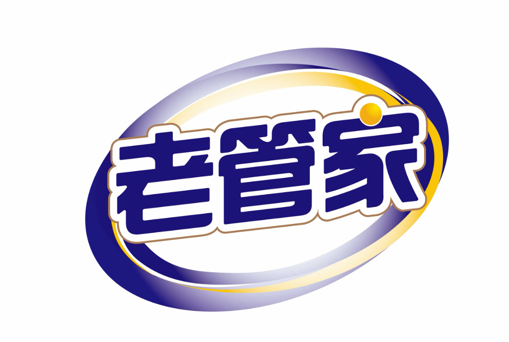
抖音电商已经成为企业增长引擎。到 2024 年，尽管还在快速增长，老管家却感受到了 3 大挑战：1 ）从渠道的视角来看，流量费用越来越贵：线上增长势头虽然很猛，但渠道的流量费用也水涨船高，获取新客的难度越来越大。如何获取新客，如何留住老客，成为了一个重要的课题。2 ）从市场的角度来看，品牌集中度越来越高：白牌杂牌陆续退出，整个家庭环境清洁行业乃至清洁日化行业剩下的都是长期主义玩家，都是巨头。大家都意志坚定，愿意接受短期亏损换取市场份额，手上的资源也都非常充沛，足够应对可能遇到的价格战、广告战。老管家原来对杂牌和白牌的优势，在这个内卷的时代已经不再是壁垒。3 ）老管家虽然品牌名很好，但留给消费者的整体形象却非常模糊。大家听名字觉得这是个老牌子，但是提起它长什么样，却没人能说清楚。老管家开始进军线下渠道，但很多经销商觉得老管家品牌整体形象没有记忆点，包装设计缺乏品质感。
于是， 2024 年底，老管家和华与华开启了战略营销品牌咨询合作。
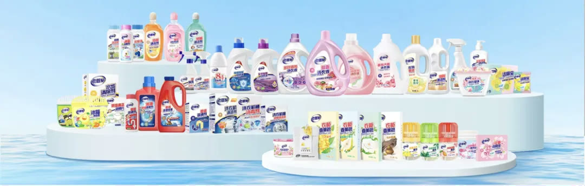
阶段 2
超级符号就是超级创意，为老管家品牌定型
华与华认为，品牌是产品和它的牌子，是话语、产品和符号的三位一体（ BRAND TRINITY ），一个本体，三个位格。这是华与华原创的品牌三角形理论。
我们先来看符号系统中最重要的超级符号。
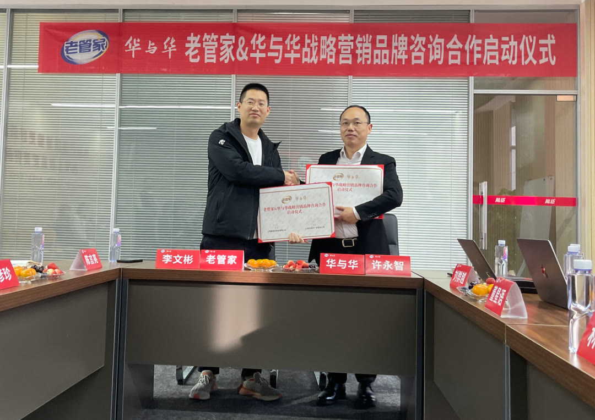

老管家是一个所有人一致认可的超级好名字。很多消费者一听这个名字，就觉得这是个老牌子，甚至是老国货。一个好名字能让人产生丰富的联想，有消费者在商品评论下说：老管家就是那个有一个老头的牌子。而老管家根本没有这样的品牌形象。对于华与华老管家项目组而言，老管家肯定需要一个超级形象。关键的问题是，这个形象到底长啥样？首先肯定是个管家，其次肯定是个老头，这就是我们最开始做老管家形象的思考路径。于是，我们开始全世界范围内搜集老头和管家的经典形象，同时大量使用 AI 工具，生成了大量的形象。
老管家超级符号创意的过程稿示意
这些过程搞有的长得像品客薯片，有的长得像名侦探柯南里的阿笠博士，有的长得像光头强，有的长得像飞屋环游记里的老头。有的头发做成条纹，有的手掌放到很大，有的穿上了格子制服，有的长出了三头六臂。有的拿着权杖，有的拿着盾牌，有的卡通，有的写实，有漫威的风格，有卡通的风格……
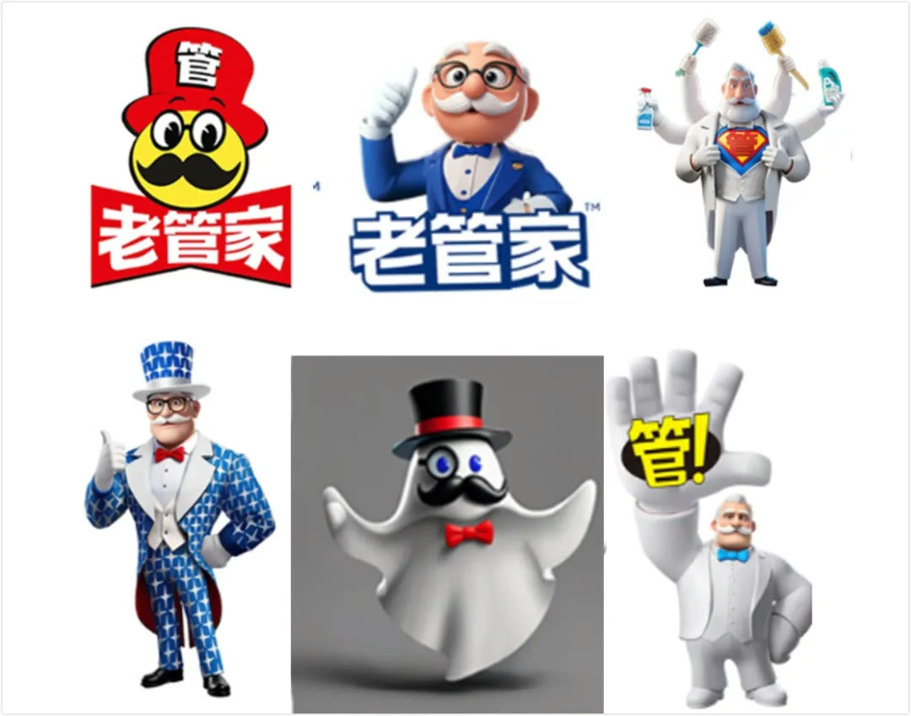
我们一轮又一轮地创作，跟华板一轮又一轮对方案，都惨遭淘汰。华板说：“这些创意，给外面任何一家营销咨询广告公司做，可能都是合格的，但还不是华与华的水平。”华与华内部有一句话：不是奇迹，就没有意义。每当遇到问题的时候，要回到原点看一看，你究竟为客户解决问题了吗？你的方案能真正帮到客户吗？虽然客户需要一个超级符号，但一个有特点的老头也只是解决了在老管家在识别层面的问题，它可能是及格的，但并没有创造更大的价值。我们重新审视老管家的生意：电商品牌没有线下销售的场所，它唯一能延伸到的物理空间，就是当消费者拿到货的时候。因此所有的电商品牌，都在想尽办法在这个场景中，影响消费者的决策：1 ）记住自己买的是什么品牌。很多人在网上买东西，根本不记得自己买的是什么牌子。它需要一个非常鲜明的品牌形象。2 ）让消费者愿意持续使用自己的产品，持续复购自己的产品。它应该是一个绝佳的销售道具。3 ）提醒消费者买自己的更多的产品。所以它应该是一个持续发射传播信号的媒介。也就是说，我们需要它不仅仅是超级符号，还得是超级销售道具，还是超级传播媒介。于是我们就这样得到了清洁行业王冠上的明珠——手套管家。
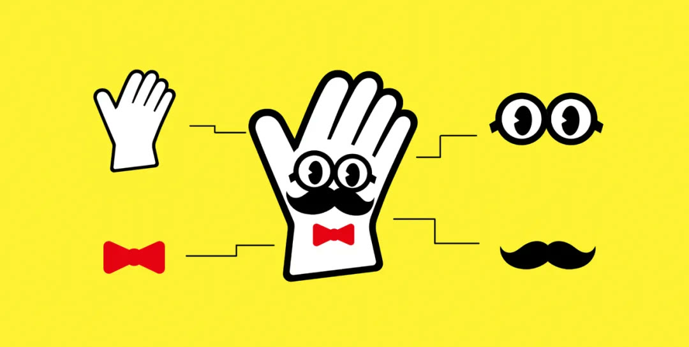
阶段 3
超级符号创造超级元媒体
每个行业都可以用很多符号来表达，这些符号或多或少都能够从某一方面传递它的价值。而超级符号是这个行业王冠上的明珠，品牌一旦获得超级符号，就能立竿见影的实现巨大提升。白色手套象征着清洁，手套中间的五官继承了传统管家的体系。严谨的眼镜，有一定年龄感的胡子，再加上红色领结的点缀，家清行业王冠上的明珠，就这样被老管家摘得了！首先，这是一个极简的符号，它解决了之前所有老头管家复杂度太高，在包装上用不够凸显的问题。包装形态各种各样，有大有小，越是简单的符号，拥有越强的适应性。
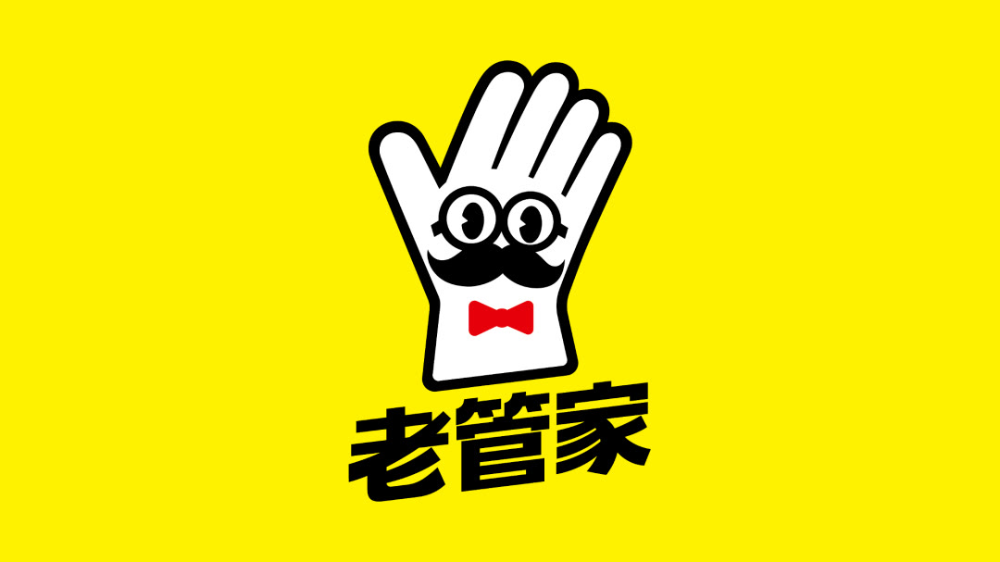
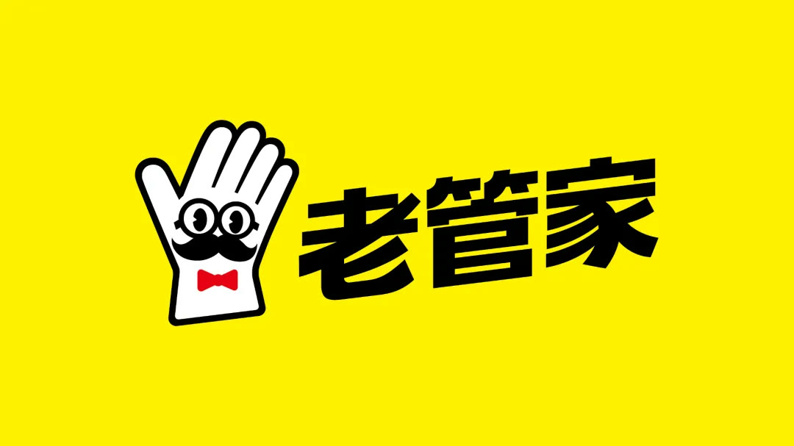
其次，它是一个世界级的符号，各种语言、各种文化的人都认识，都理解。最关键的是，这个超级符号能直接做成手套，送给所有的消费者。也就是说，每当消费者购买老管家的产品，我们就在他的家里植入了一个老管家的信号发射器，持续向消费者发送老管家的品牌信息。市场营销学有这样两个数据：1 ）新客户的销售成本是老客户销售成本的 5 倍。2 ）改善 5 %的客户流失，利润可改善 25 %。当一个市场增量越来越少，竞争越来越激烈的时候，抓用户的复购才是核心中的核心。因此当线上的流量成本持续攀升，获取新客的成本越来越高的时候，如何让已经购买过老管家的顾客能够记住老管家，下次还买老管家，甚至买老管家更多其他的产品，是我们研究的重中之重。老管家的超级符号手套管家，不仅形象简单鲜明，一目了然，一见如故，看过一次就能能给人留下深刻的印象。同时也是老管家的超级元媒体，每送出一副手套，老管家的品牌就实现了一次传播，同时相当于在消费者家里安装了一个老管家产品的订阅提示。时不时地提醒顾客，该订阅老管家的新品了。
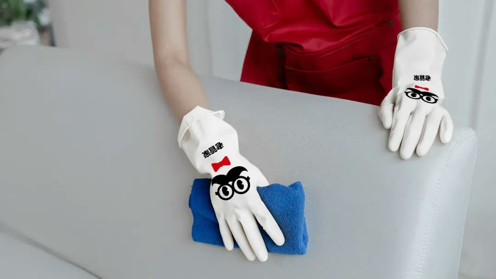
可以说手套管家这个符号，它既是品牌符号，又是销售道具，更是传播媒介。在老管家这个案例中，我们创造了华与华历史上第一个品牌符号、销售道具、传播媒介三合一的超级符号！一个绝佳的超级符号，能创造超级元媒体。
阶段 4
超级符号创造超级命名
老管家超级符号的诞生，还为老管家提供了一个巨大的附加价值。在国内，抖音是老管家的增长发动机，在海外，老管家正随 tiktok 出海东南亚， 2025 年其实是老管家出海元年。但出海的企业首先都会遇到一个问题：品牌的英文名应该叫啥？李总在合作一开始也提出了英文命名的课题。按照英文直译，老管家可被翻译成 Old Butler ，或者 Mr . Housekeeper （或者 steward ， majordomo ），如果参考国外的品牌Mr . Clean ，老管家也可以译为 Uncle Clean 。但这些名字李总都想过，觉得都不够有记忆度，或者在注册上遇到了困难。老管家是一个超级好的品牌名，能够让大家天然地对它产生信赖感。那么它的英文名也要具备极高辨识度和记忆度，一个好的英文名，能够极大提升老管家品牌出海的效率。而在超级符号诞生后，华与华又提出了老管家英文命名的大创意—— Mr . Gloves ！这是一个让人眼前一亮的名字，最顶级的名字就是你听到它，脑海中就有画面了。
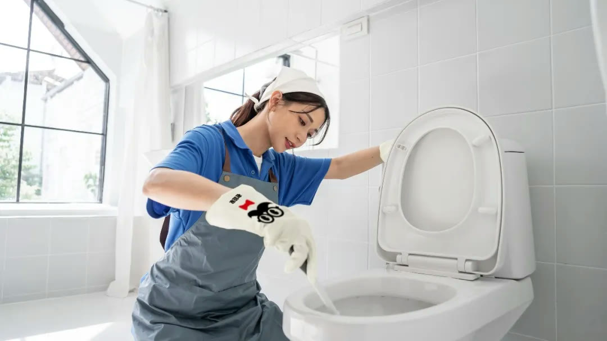
回到我们的品牌三角形中，手套管家就是老管家品牌符号系统中最重要的符号。而在品牌的话语体系中，命名是排在第一优先级的，品牌资产最终首先要积累在品牌名上。Mr . Gloves 这个名字和超级符号相辅相成，以后在所有海外市场，老管家的品牌资产都将高效地积累在 Mr . Gloves 这个名字上，和超级符号一起帮助老管家实现品牌的全球化。为客户在海外再造一个老管家打下了基础。李总听到这个创意后，当即决定把 Mr . Gloves 在全球范围内注册，超级符号连老管家品牌出海的顶层设计也解决了！确定命名之后，老管家还需要一个口号，来统领整个品牌。老管家的产品主要集中在家庭清洁的各个细分领域。比如洗衣机清洁剂、洁厕灵、管道疏通剂、厨房油污净、地板清洁剂、除湿剂等等。因为线上渠道有长尾效应，这些以前对于线下渠道来说相对低频的消费品，在电商渠道商也能形成大量的销售。因此，老管家的产品品类非常丰富，满足了各个细分市场的需求。2024 年，老管家也开始逐步拓展线下市场，线下市场对产品的要求和线上不同，只有市场规模大、高频刚需的产品才能随着经销商进入，也就是说，粉、精、皂、液未来也是老管家的必做品类。如何用一句话传递老管家的品牌价值？老管家以前的口号叫“家庭清洁，就用老管家”，这已经是一句很到位的口号。要想到一句更好的口号其实是很难的。
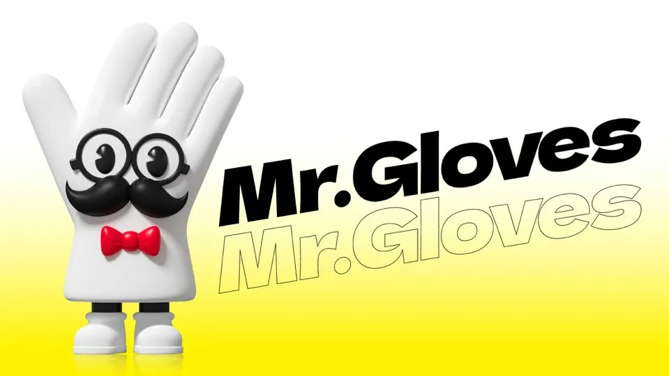
这一句新的口号，既要对老管家未来的产品有足够的包容度，又更简单好记，朗朗上口。我们认为老管家的品牌戏剧性在于“管”！管什么？管清洁！于是就有了这句管用 100 年的品牌谚语——老管家，管清洁！
阶段 5
不是化学家，也能做产品开发
品牌是产品和它的牌子。品牌和产品是 0 和 1 的关系。没有好产品，品牌就建立在虚无上。华与华的续约率很高，因为华与华能帮客户做产品开发和产品翻新，能够真正进入了客户的生产线里，成为了客户生产线的一部分。这里的产品开发，是产品概念的开发，是购买理由的重新寻找，并进行产品的重新命名。是通过包装设计，放大购买理由，追求让一个没听说过老管家的客户，第一次看到包装，也愿意购买。此外，产品开发还包括产品造型设计、产品质感设计，内容物设计等等。我们用老管家的拳头产品管道疏通啫喱产品，给大家详细展示华与华是如何做产品开发的。
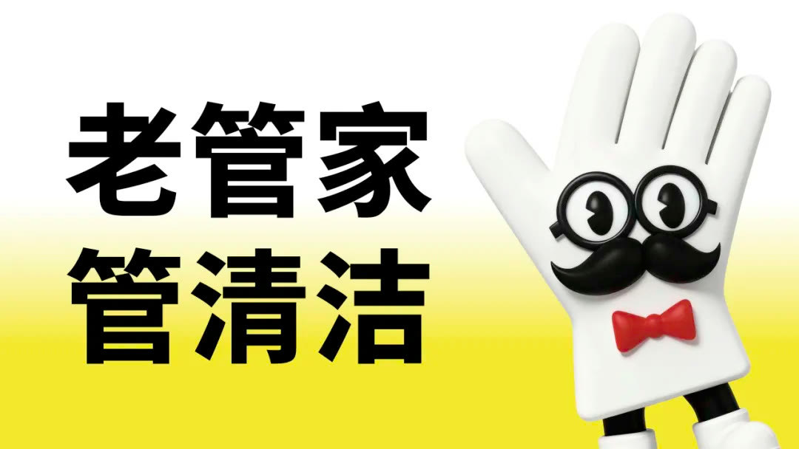
其实市场上的管道疏通剂，卖点大同小异，要么讲疏通强度，要么讲疏通速度。这些都是品类价值，并不独特，谁都可以说。那么老管家的管道疏通啫喱和其他产品的区别到底在哪里呢？我们在访谈老管家研发总监的时候，了解到：管道疏通剂有效，是因为配方里的碱性化学成分。老管家的碱含量是竞品的 2 . 75 倍，浓度几乎是市面上主流疏通剂中最高的，所以效果也是最好的！也就是说，一直以来，老管家都愿意用更高的成本，为顾客提供更高的价值。
但之前的包装没有凸显出来的巨大差异化价值。我们把这个巨大的价值浓缩成 2 个字：加浓！
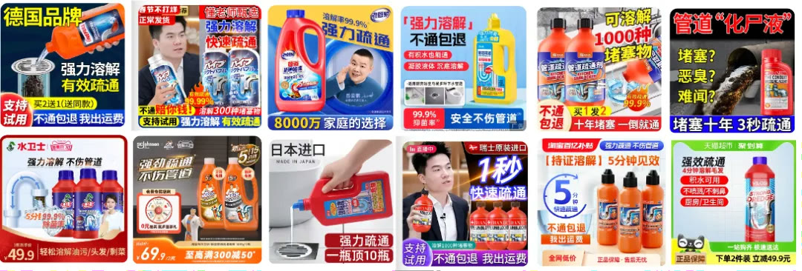
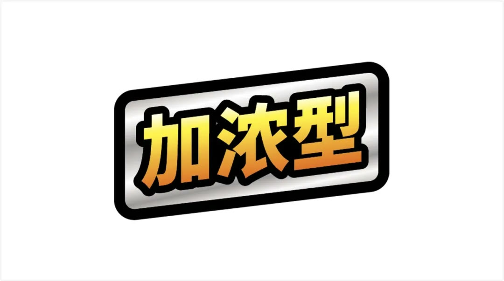
并在加浓后面加了一个“型”。产品名就从“管道疏通啫喱”变成了“管道疏通啫喱·加浓型”。1 ）“加浓”触发消费者对“超越常规”的联想；2 ）加=资源倾斜（更多原料/更严工艺/更久时间）；3 ）比起“加浓”这个形容词，“加浓型”传达的是一种产品类型/配方类型，让消费者觉得更专业。“管道疏通啫喱·加浓型“是对产品的重新定义，也让老管家重新掌握了品类的解释权。
阶段 6
包装是最大元媒体，版式是品牌超级识别
华与华认为，品牌最重要的媒体就是元媒体。元媒体，就是品牌自身的、不用花钱、少花钱就可以使用的媒体。对快消日化品牌而言，最大的元媒体就是包装。老管家 2024 年卖出 1 . 8 亿个产品。这1 . 8 亿个产品，就是 1 . 8 亿个广告位。华与华为老管家设计包装的三个原则：1 ）让老管家产品的包装在货架上，自己把自己卖出去；2 ）因为老管家的重要销售场景在直播间，所以包装设计要做到让主播不需要提前熟悉产品，照着包装念就能成交；3 ）让买了老管家产品的消费者，再次看到包装时就准确识别老管家。在做管道疏通啫喱的包装设计时，项目组也遇到了一个大挑战。往常我们遇到的包装都是方正的，或者圆形的，但这款包装的标签形状太齐葩了，完全是一个不规则的形状。
老管家产品包装（旧）
在这样的前提下，我们的目标就是：1 ）放大品牌，让老管家更凸显；2 ）充分利用异形空间，不浪费包装的尺寸；3 ）用符号对包装卖点进行编码，放大产品购买理由。最终，我们对包装进行了十几条改善，这里给大家展示一下几个重大改善：1 ）我们把老管家三个字放大了，比原来大了 1 . 5 倍。加入了超级符号手套管家的形象，品牌区的整体面积比原来大了 4 倍。
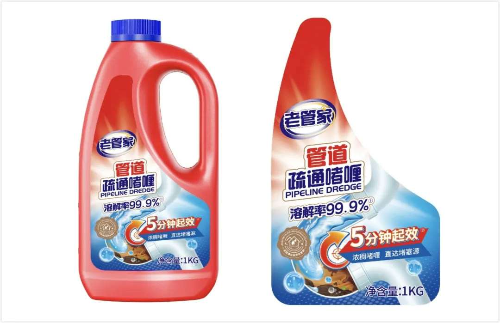
请看上面这张图，当我们把品牌区的面积放大 4 倍，品牌能够辐射的范围面积增大了 16倍。品牌的识别度、影响力大幅度提升。
我们来看一下效果图。
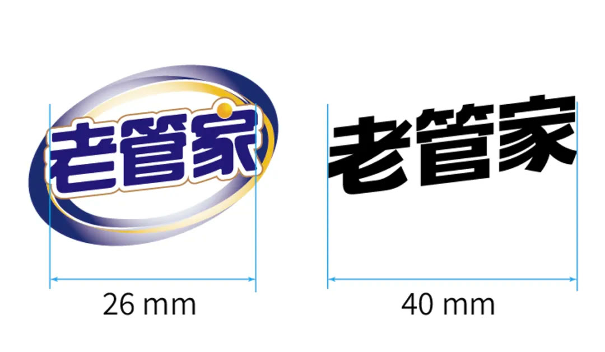
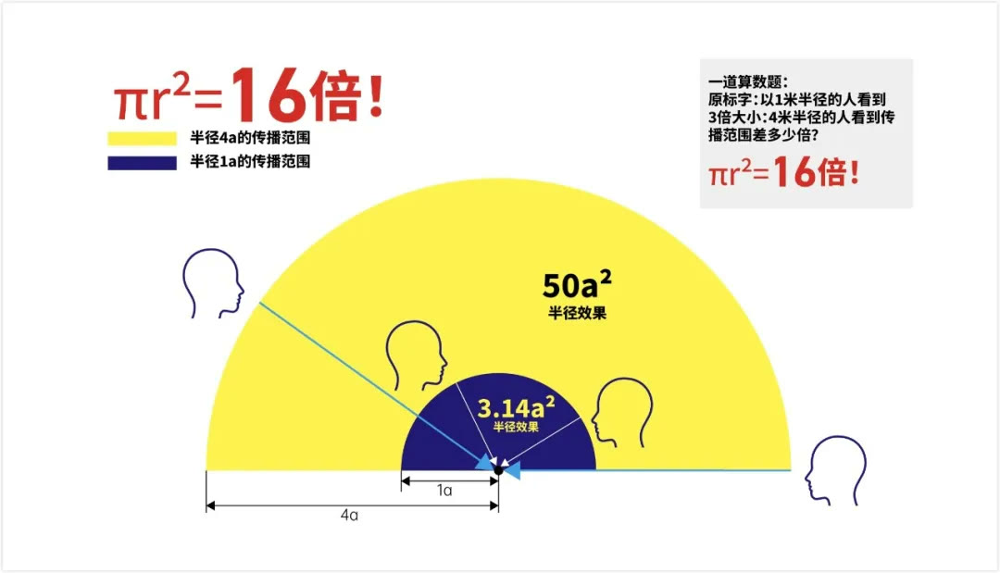
2 ）我们把品牌区和产品区做了清晰的分割，给品牌创造了一个相对独立的空间，品牌感更强。
3 ）品牌区和产品区区分清晰后，我们把产品名也做了放大处理。由于包装上每一寸的面积都很珍贵，我们选择把英文名去掉。
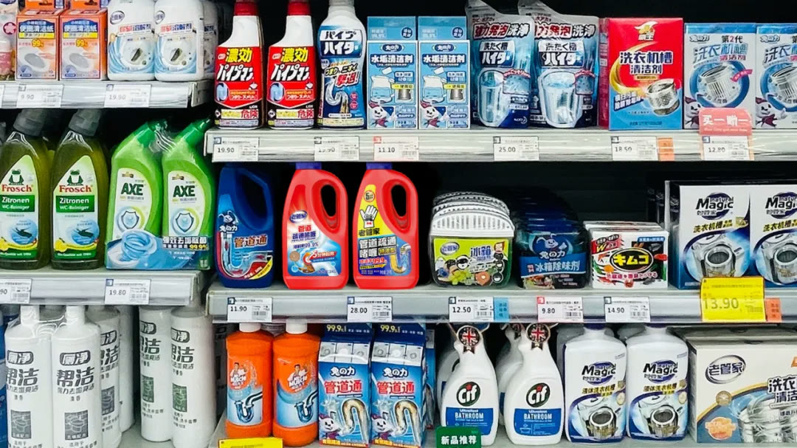
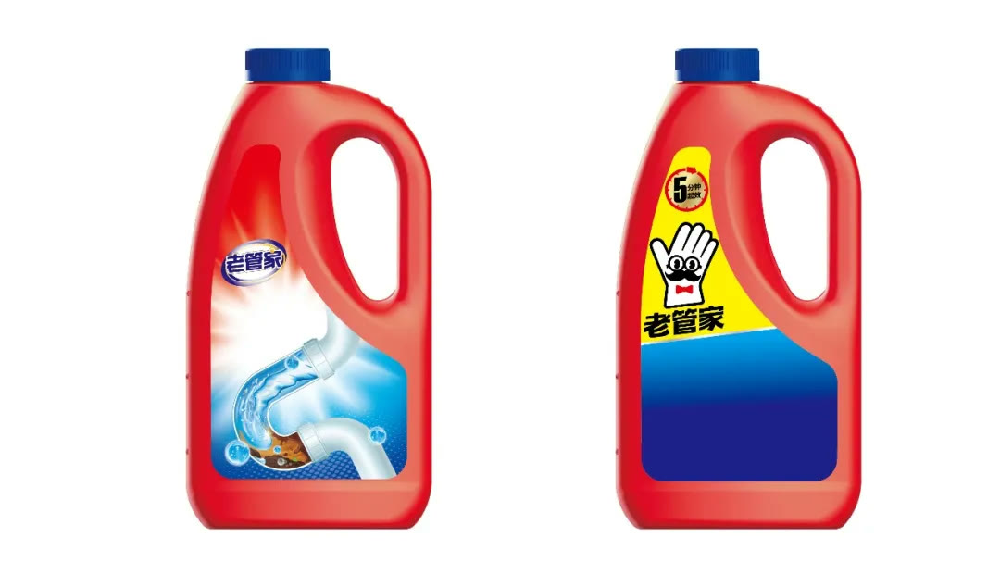
同时，“加浓型”三个字的底色，借鉴了机油包装的金属质感，有极强烈的功能性符号。4 ）我们把 5 分钟起效做成了表盘的符号，放在异形的部分，充分利用异形标签的空间。
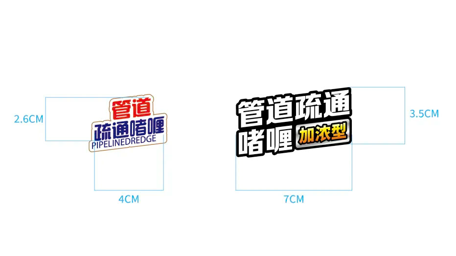
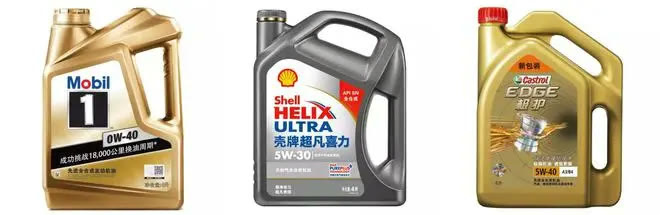
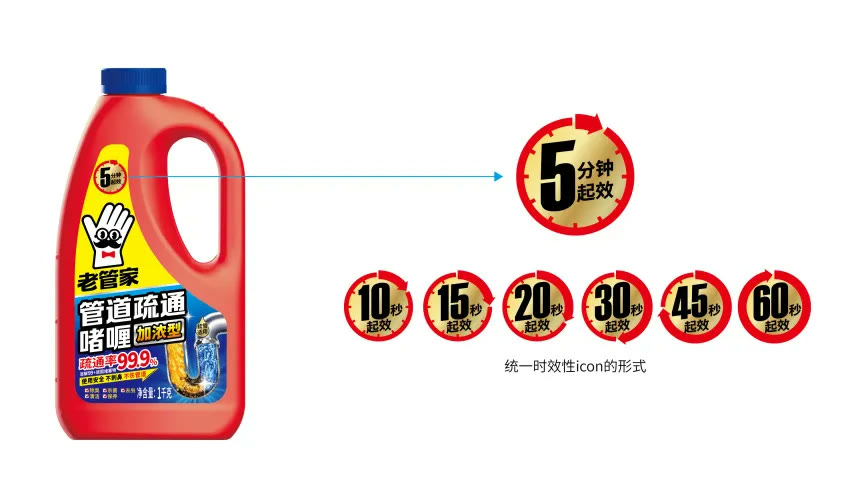
5 ）我们把溶解率 99 %改成了疏通率 99 %。溶解是手段，疏通才是目的。很多人住的房子房龄比较老，很多人买疏通剂的时候会担心伤管道，我们的产品是啫喱质地，不伤管道，这些其他的购买理由也一并列在下面。
大家可以看一下改善前后的最终效果。
老管家管道疏通啫喱的包装设计对比（右新）
另外，在做这款包装的时候，我们也注意到了一个现实情况：

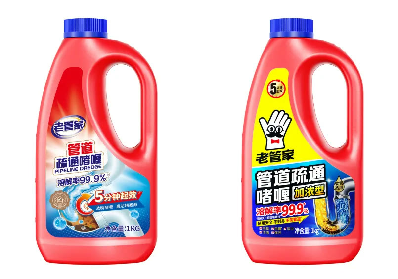
渠道的激烈竞争，要求老管家快速更新迭代，一款新产品从立项到上市，最快只用 2周，常规时间也能控制在 2 个月内。老管家每年要推出上百款产品，产品包装设计的工作量非常大。同时，在电商渠道上，一切动作都是透明的。竞争对手的视频长什么样，用什么包装，主打什么卖点，全部一清二楚。很多产品、主图的卖点文案，一旦爆火，马上全网抄袭。在这种情况下，如何提升老管家产品包装设计的效率？如果提升每一款产品的品牌感？我们经过大量的调研，制定了一套老管家专属的产品包装设计版式。版式设计非常重要，尤其是当产品特别多的时候，可以起到统领的作用。有时候，只要看到版式，就知道这款包装是哪个品牌的。比如我们的兄弟公司读客的三个圈系列，只要在书的封面上看到三个圈，就知道是读客的书。
一个圈放书名，一个圈放市场地位，一个圈放购买理由（局外人），已经成为了读客的特色版式。我们为老管家制作了上下二分的版式，既保留了品牌区，又为每一款不同产品的不同呈现方式留下了足够的自主空间。
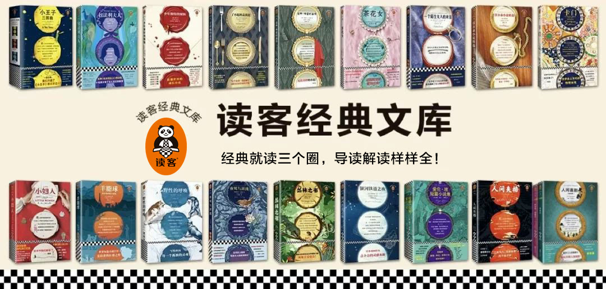
我们把这一套规则做成了详细的包装设计执行说明，和客户品牌部一起，在半年的时间里完成了近百款包装焕新的设计。可以说，正因为有规则，大家才能默契配合，让现在的包装看起来像一家人，一看就知道是老管家。有了超级版式，老管家的品牌感又迈上了新的台阶！
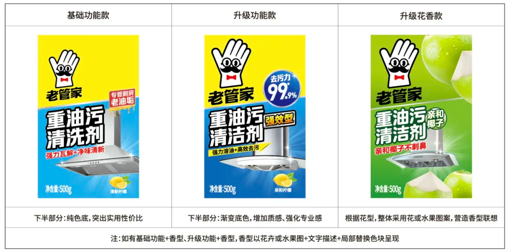
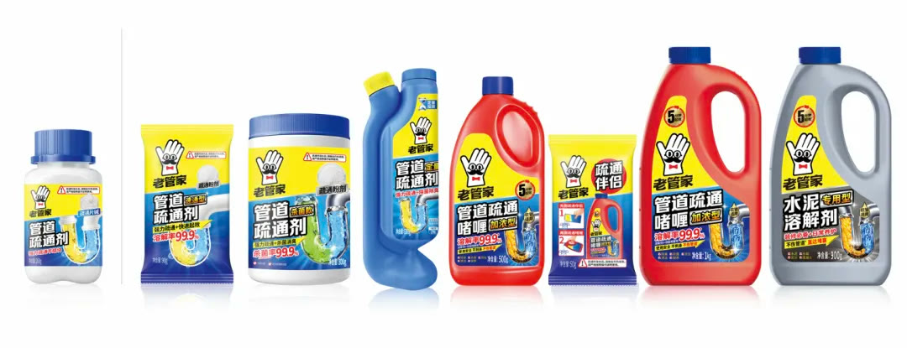
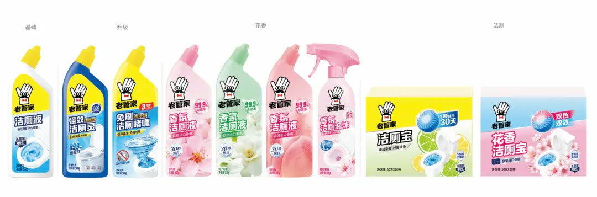
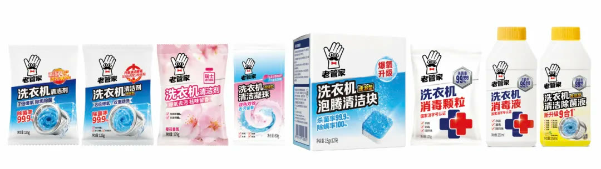
案例总结
最后用一首诗来总结全文：线上品牌有困难，新客越来越花钱，互相抄来又抄去，没日没夜拼价钱。超级符号反内卷，线上投流能存钱，顾客一秒就记住，再也不花冤枉钱。符号创造元媒体，每次清洁有道具，品牌出海一盘棋，全球品牌建地基。产品开发不简单，独特价值要播传，版式塑造品牌感，超级符号最关键。